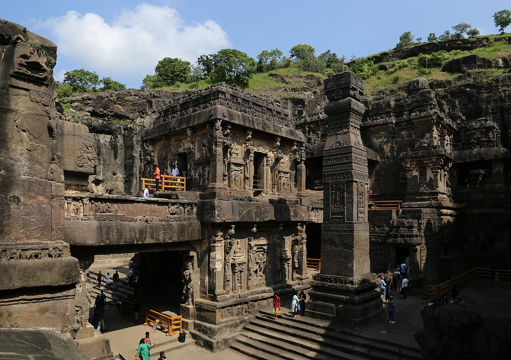

Indian architecture is rooted in the history, culture, and religion of India. Among several architectural styles and traditions, the best-known include the many varieties of Hindu temple architecture and Indo-Islamic architecture, especially Rajput architecture, Mughal architecture, South Indian architecture, and Indo-Saracenic architecture.
Indian mythology is a treasure trove of captivating stories, mystical characters, and deep philosophical insights. In this article, we'll explore the enchanting world of Indian mythology and its enduring influence on Indian literature.
Early Indian architecture was made from wood, which did not survive due to rotting and instability in the structures. Instead, the earliest existing architecture are made with Indian rock-cut architecture, including many Buddhist, Hindu, and Jain temples.
The Hindu temple architecture is divided into the Dravidian style of southern India and the Nagara style of northern India, with other regional styles. Housing styles also vary between regions, depending on climate.
The first major Islamic kingdom in India was the Delhi Sultanate, which led to the development of Indo-Islamic architecture, combining Indian and Islamic features. The rule of the Mughal Empire, when Mughal architecture evolved, is regarded as the zenith of Indo-Islamic architecture, with the Taj Mahal being the high point of their contribution. Indo-Islamic architecture influenced the Rajput and Sikh styles as well.